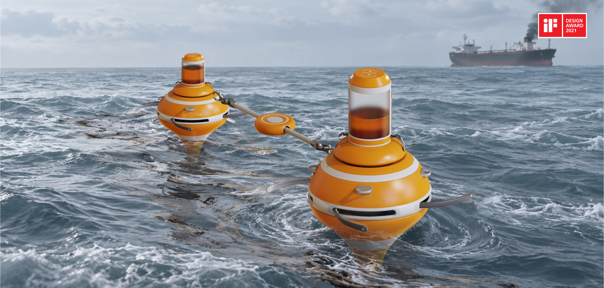
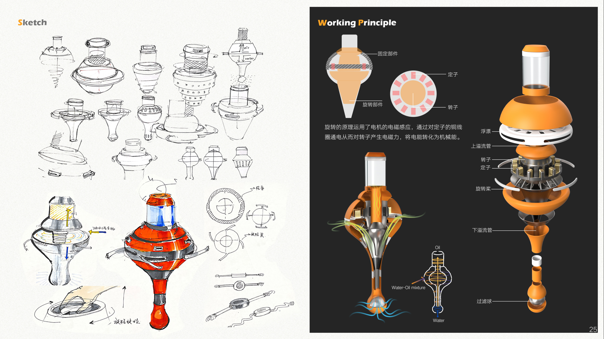
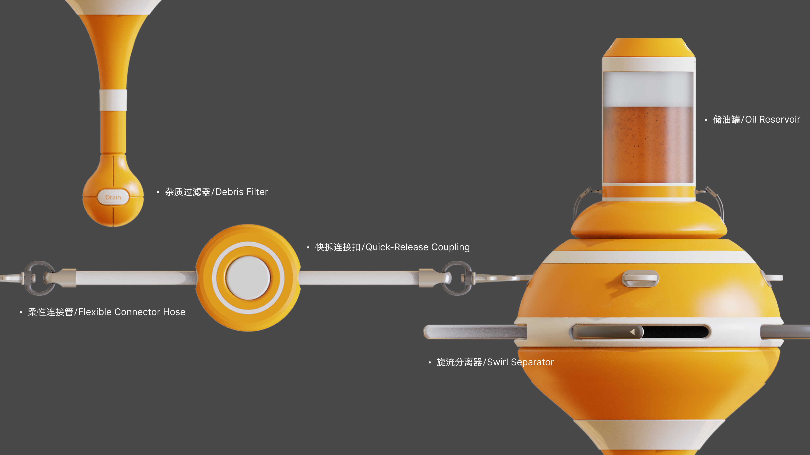
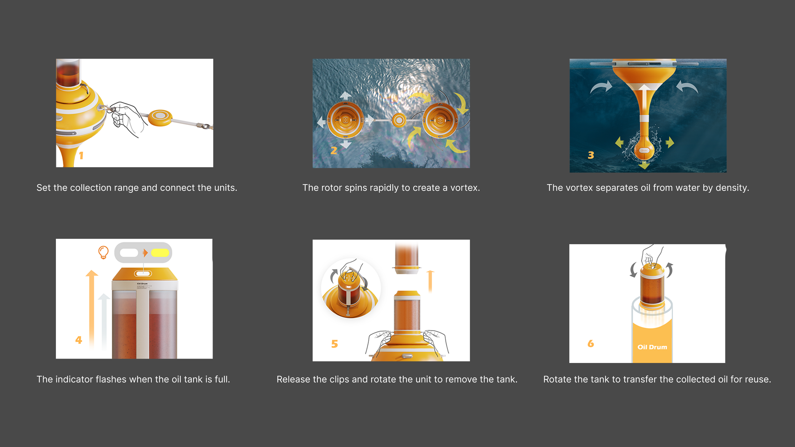
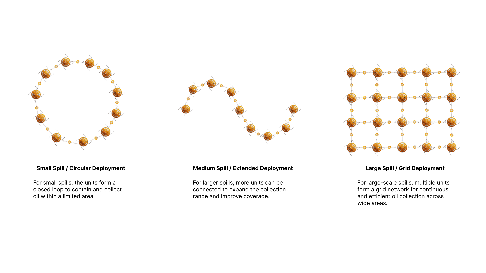
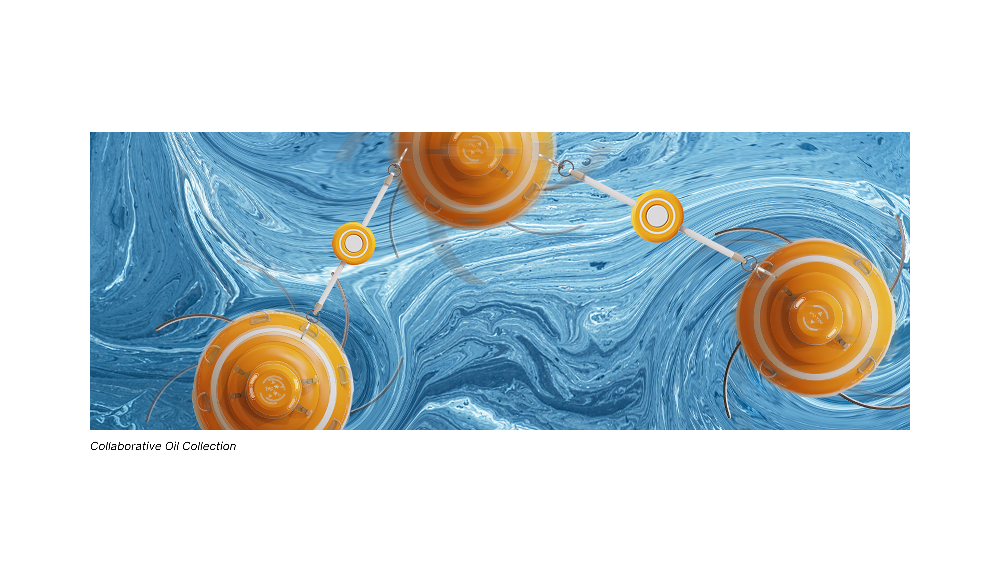

Deoiling Machine
Staff / 参与者
LiangHou, ShutingMai, Jiarui Zhang
Design Awards / 获奖
Deoiling Machine is an oil–water separation and crude oil recovery device designed for offshore oil spill response. Using cyclonic separation, it generates a high-speed vortex that separates oil and seawater based on their density difference. Denser seawater moves outward and downward for discharge, while lighter crude oil gathers at the center and flows upward into the collection module. Once the oil reaches a preset capacity, an indicator alerts operators to replace the container. By integrating oil–water separation, oil recovery, and status monitoring, the system helps reduce marine pollution while improving the efficiency of crude oil recovery.
Deoiling Machine 是一款面向海上原油泄漏应急处理的油水分离与原油回收装置。产品利用旋流分离原理，通过高速旋转形成稳定涡流，利用海水与原油之间的密度差实现快速分离：高密度海水沿外旋流向下排出，低密度原油则汇聚至中心并向上进入储油模块。当原油收集至设定容量后，顶部指示灯将提醒工作人员及时更换储油桶。该设计将油水分离、原油回收与状态提醒整合于一体，在降低海洋污染扩散风险的同时，提高泄漏原油的回收效率。




